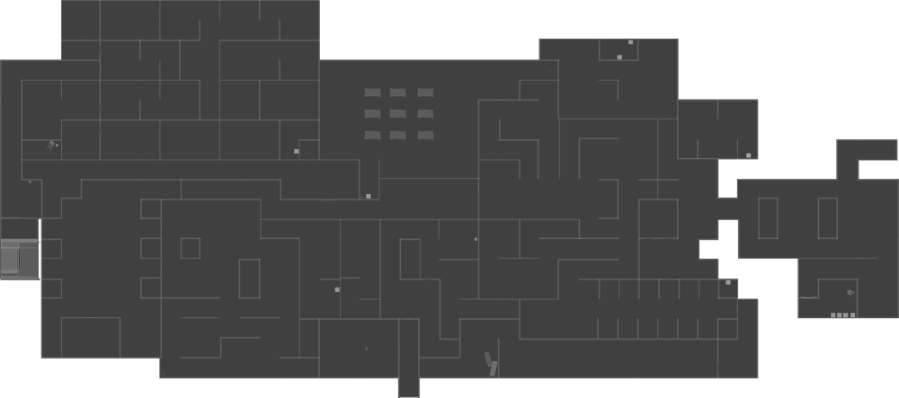

Level 2: Dark Rooms
Information
The Dark Rooms look almost identical to the Lobby, with the primary difference being their darker and more claustrophobic atmosphere. The hallways are narrower, creating a more constricting and unsettling feeling for players. It's worth noting that the level seems to have a striking green lighting or tint, further enhancing its ominous appearance.
WalkThrough
-
Go to a nearby room to grab a Flashlight and check each of the drawers for important items such as a VHS Tape, Body Parts, Clock Hands, and a Time Note.
-
Go into the morgue and check the pattern of the blood-stained bodies. Use them to solve the code on the locker, giving you a Hammer.
-
Go to the vase room, use the Hammer to break the vases until you get a Red Key.
-
Head to the painting room which you can now unlock using the Red Key you just collected. There will be five different paintings with hidden letters on them. Mark down each of the five different paintings' letters and determine the words spelled out by the paintings. Head to the very end of the painting room where you'll now input the word into the lock on this box. Grab the four Fuses and the Moth Jelly inside the unlocked box.
-
Head to the clock room and rotate the floating metal until the shadow casted from it appears in the shape of a horse, this will reveal a secret door.
-
Go into the secret room and attach the Clock Hands to the clock, and turn them until they display the time you observed on the Time Note. This will reveal a note with a code on it.
-
Go to the room with a box and use that code to unlock the padlock on the box, giving you the Pliers.
-
Find the VHS Tape, watch the tape on the TV, and note down the names listed as well as their missing Body Parts.
-
Head to the morgue and find the names of the victims listed in the video and place their corresponding Body Parts on the tray, this will cause a mirror to break, allowing access to the lever room.
-
Go to the lever room and flick some levers, then run back to the door to see if one of the lights on the lock has turned green. Turn off the switch you flicked if it didn't turn green, or leave the switch flipped on if it did. Do this with every switch in the room until all three of the red lights have turned green, unlocking the door and giving you access to all your Radiation Gear.
-
Head to the radiation area, equip your Protection Suit, and use your Geiger Counter to determine if an item laying on the floor is radioactive. If yes, spray them with your Fire Extinguisher. If not, move on and check another item. Keep doing this until you hear the beeping sound of the door being unlocked.
-
Go down the hallway and use the Pliers obtained earlier to unchain the exit door, then stand on the button in the next room until the garage door is fully raised and make a run for the room before it closes again. Drop down the hole to enter the Parking.